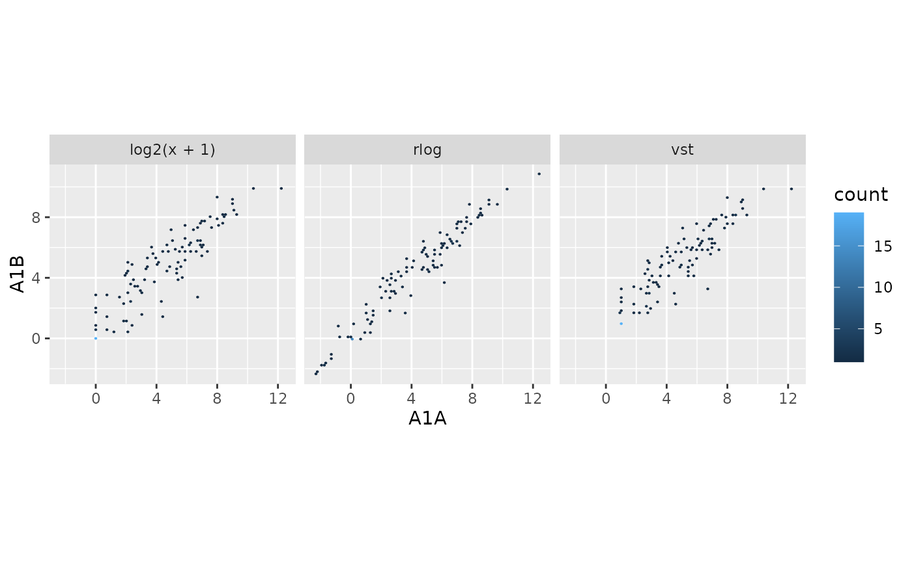
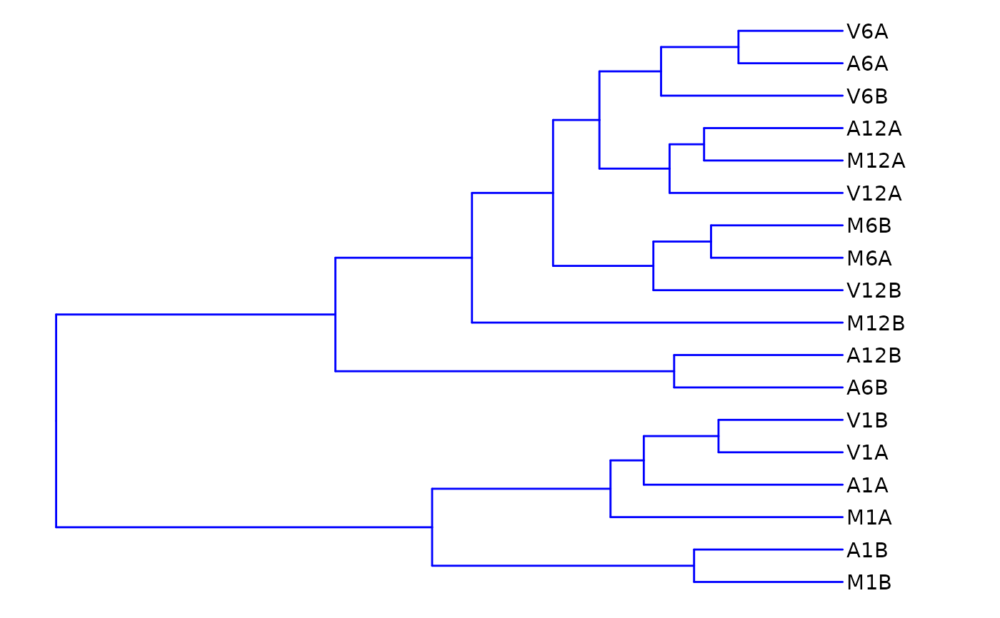
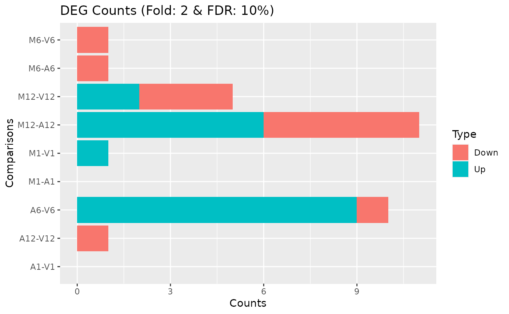
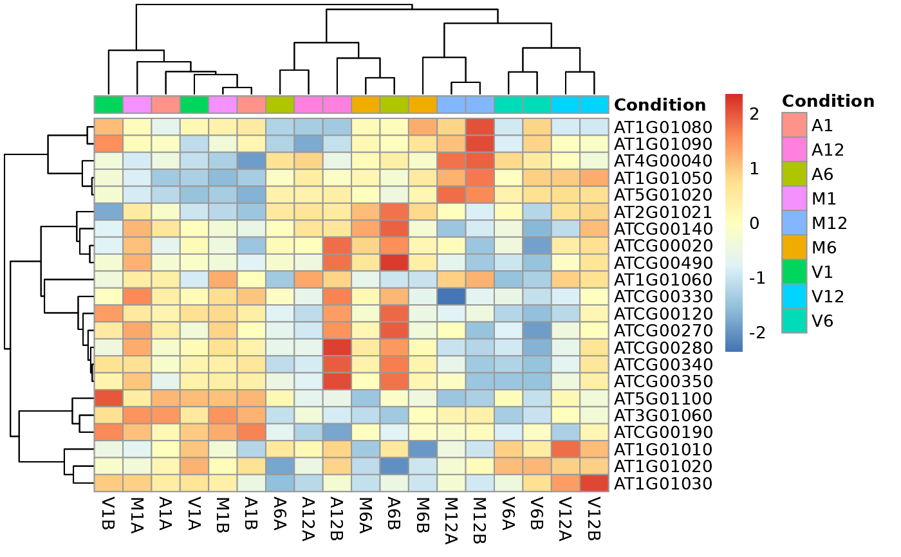
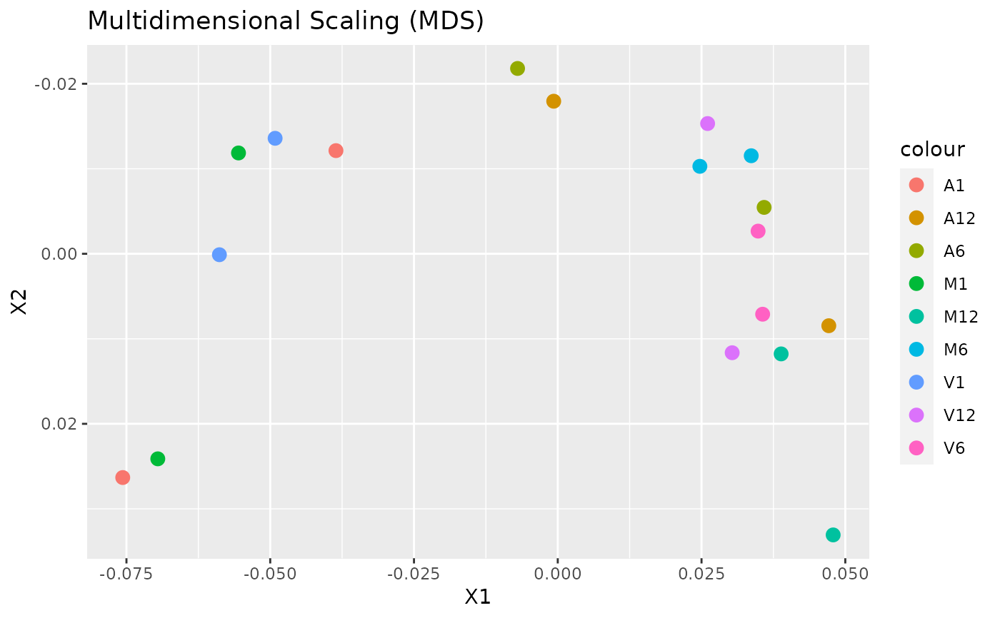
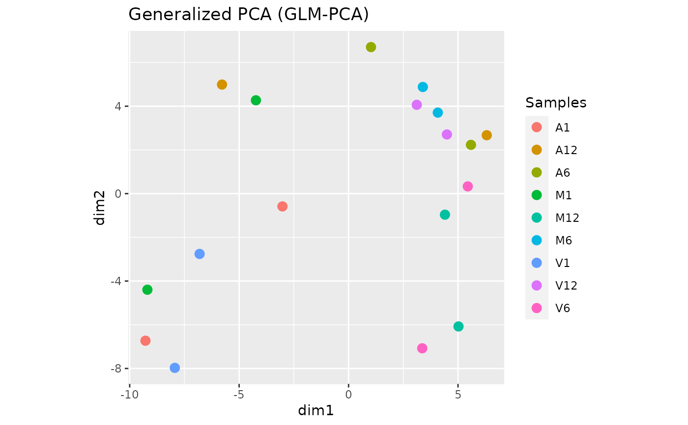
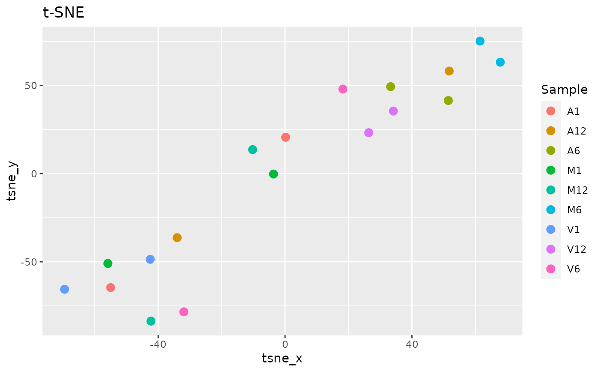
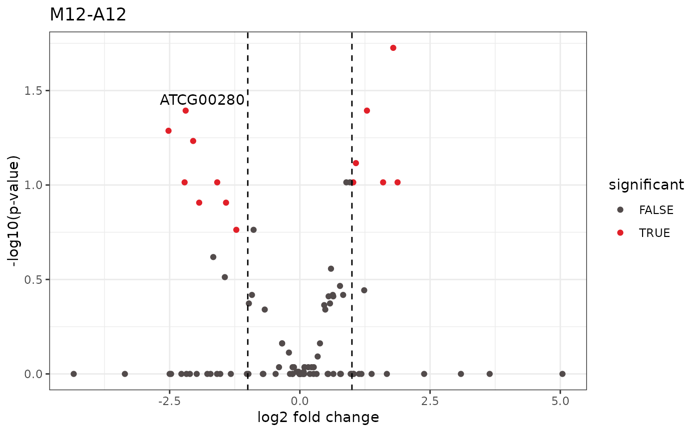

dataViz.RdexploreDDS Convenience wrapper function to transform raw read counts using the DESeq2::DESeq2-package() package transformations methods. The input file has to contain all the genes, not just differentially expressed ones.
exploreDDSplot Scatterplot of transformed counts from two samples or grid of all samples.
hclustplot This function computes the sample-wise correlation coefficients using the stats::cor() function from the transformed expression values. After transformation to a distance matrix, hierarchical clustering is performed with the stats::hclust() function, and the result is plotted as a dendrogram.
heatMaplot This function performs hierarchical clustering on the transformed expression matrix. It uses, by default, a Pearson correlation-based distance measure and complete linkage for cluster join.
PCAplot This function plots a Principal Component Analysis (PCA) from transformed expression matrix. This plot shows samples variation based on the expression values and identifies batch effects.
MDSplot This function computes and plots multidimensional scaling analysis for dimension reduction of count expression matrix. Internally, it is applied the stats::dist() function to the transformed count matrix to get sample-to-sample distances.
GLMplot This function computes and plots generalized principal components analysis for dimension reduction of count expression matrix.
MAplot This function plots log2 fold changes (y-axis) versus the mean of normalized counts (on the x-axis). Statistically significant features are colored.
tSNEplot This function computes and plots t-Distributed Stochastic Neighbor embedding (t-SNE) analysis for unsupervised nonlinear dimensionality reduction of count expression matrix. Internally, it is applied the Rtsne::Rtsne() function, using the exact t-SNE computing with theta=0.0.
volcanoplot A simple function that shows statistical significance (p-value) versus magnitude of change (log2 fold change).
exploreDDS(countMatrix, targets, cmp = cmp[[1]], preFilter = NULL, transformationMethod = "raw", blind = TRUE) exploreDDSplot(countMatrix, targets, cmp = cmp[[1]],preFilter = NULL, samples, blind = TRUE, scattermatrix = FALSE, plotly = FALSE, savePlot = FALSE, filePlot = NULL) hclustplot(exploredds, method = "spearman", plotly = FALSE, savePlot = FALSE, filePlot = NULL) heatMaplot(exploredds, clust, DEGlist = NULL, plotly = FALSE, savePlot = FALSE, filePlot = NULL, ...) PCAplot(exploredds, plotly = FALSE, savePlot = FALSE, filePlot = NULL) MDSplot(exploredds, method = "spearman", plotly = FALSE, savePlot = FALSE, filePlot = NULL) GLMplot(exploredds, plotly = FALSE, savePlot = FALSE, filePlot = NULL, ...) MAplot(exploredds, lfcShrink = FALSE, padj.cutoff = 0.05, plotly = FALSE, savePlot = FALSE, filePlot = NULL) tSNEplot(countMatrix, targets, plotly = FALSE, savePlot = FALSE, filePlot = NULL, ...) volcanoplot(degseqDF, comparison = "M12-A12", filter = c(Fold = 2, FDR = 10), genes = "NULL", plotly = FALSE, savePlot = FALSE, filePlot = NULL)
| countMatrix |
|
|---|---|
| targets | targets |
| cmp |
|
| preFilter | allows removing rows in which there are very few reads. Accepts
a numeric value with the minimum of total reads to keep. Default is |
| transformationMethod | a |
| blind | logical, whether to blind the transformation to the experimental
design (see varianceStabilizingTransformation), from |
| samples | a |
| scattermatrix | if |
| plotly | logical: when |
| savePlot | logical: when |
| filePlot | file name where the plot will be saved. For more information,
please consult the |
| exploredds | object of class |
| method | a |
| clust | select the data to apply the distance matrix computation. If |
| DEGlist | List of up or down regulated gene/transcript identifiers meeting
the chosen filter settings for all comparisons defined in data frames |
| lfcShrink | logiacal. If |
| padj.cutoff | filter cutoffs for the p-value adjusted. |
| degseqDF | object of class |
| comparison |
|
| filter | Named vector with filter cutoffs of format c(Fold=2, FDR=1) where Fold refers to the fold change cutoff (unlogged) and FDR to the p-value cutoff. |
| genes |
|
| ... | For |
exploreDDS function returns an object of class DESeq2::DESeqTransform().
heatMaplot function returns an object of pheatmap or plotly class.
exploreDDSplot function returns an object of ggplot2 plot.
hclustplot, PCAplot, MDSplot, GLMplot, MAplot,
tSNEplot, and volcanoplot functions returns an object of ggplot or plotly class.
Note that the recommendation is to use the resulting transformed values in the
transformationMethod argument only for visualization and clustering,
not for differential expression analysis which needs raw counts. Users are
strongly encouraged to consult the DESeq2::DESeq2-package() vignette for more detailed
information on this topic and how to properly run DESeq2 on data sets
with more complex experimental designs.
For more details on DESeq2, please consult the following
page: DESeq2.
For more details on targets file definition, please consult the following
page: systemPipeR.
Daniela Cassol
## Targets file targetspath <- system.file("extdata", "targets.txt", package="systemPipeR") targets <- read.delim(targetspath, comment="#") cmp <- systemPipeR::readComp(file=targetspath, format="matrix", delim="-") ## Count table file countMatrixPath <- system.file("extdata", "countDFeByg.xls", package="systemPipeR") countMatrix <- read.delim(countMatrixPath, row.names=1) ## Run exploredds exploredds <- exploreDDS(countMatrix, targets, cmp=cmp[[1]], preFilter=NULL, transformationMethod="rlog")#> Warning: some variables in design formula are characters, converting to factors## Plot exploreDDSplot exploreDDSplot(countMatrix, targets, cmp=cmp[[1]], preFilter=NULL, samples=c(3,4))## Plot hclustplot hclustplot(exploredds, method = "spearman")## Plot heatMaplot Samples heatMaplot(exploredds, clust="samples", plotly = TRUE) ## Individuals genes identified in DEG analysis ### DEG analysis with `systemPipeR` degseqDF <- systemPipeR::run_DESeq2(countDF = countMatrix, targets = targets, cmp = cmp[[1]], independent = FALSE)#> Warning: some variables in design formula are characters, converting to factors## Plot heatMaplot heatMaplot(exploredds, clust="ind", DEGlist = unique(as.character(unlist(DEG_list[[1]]))))## Plot PCAplot PCAplot(exploredds, plotly = TRUE) ## Plot MDSplot MDSplot(exploredds, plotly = FALSE)## Plot GLMplot exploredds_raw <- exploreDDS(countMatrix, targets, cmp=cmp[[1]], preFilter=NULL, transformationMethod="raw")#> Warning: some variables in design formula are characters, converting to factorsGLMplot(exploredds_raw, plotly = FALSE)## Plot MAplot MAplot(exploredds_raw, plotly = TRUE)#>#>#>#>#>#>#> [1] "removing NA from the results"## Plot tSNEplot tSNEplot(countMatrix, targets, perplexity = 5)## Plot volcanoplot volcanoplot(degseqDF, comparison = "M12-A12", filter = c(Fold = 1, FDR = 20), genes = "ATCG00280")